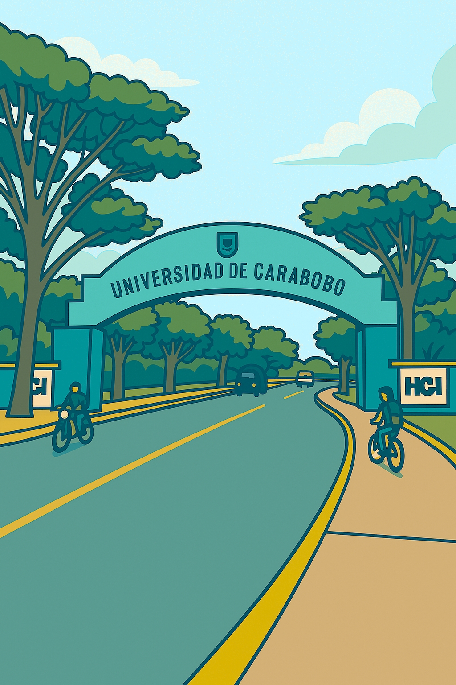

La oportunidad de tu vida para alcanzar el título universitario que asegure tu futuro(...créeme por favor), finalmente después de tanto esfuerzo, te has graduado de bachiller y has adquirido un cupo universitario. Pero cuidadito con creer que eso es el final de todo, no no, apenas comienza...
La vida universitaria está llena de travesías y problemas que enfrentar, tantos años de crisis han deformado por completo el ecosistema de la Ciudad Universitaria de Bárbula, lo que trae complicaciones que se suman a los estudios.
Pero tras haber sobrevivido a tantas penurias en tu vida, esto no será razón para detener tus sueños ¿verdad?...(por favor, estoy desesperado).
¡Así es! Un verdadero ganador lo da todo por sus metas o muere en el intento (metafórica o literalmente en este caso), así que en esta guía introductoria nos hemos dado a la tarea de recopilar toda la información competente y necesaria que precisarás para iniciar tus estudios en la Prestigiosa y para nada Mercenariada por Jessy Divo Universidad de Carabobo en Naguanagua.